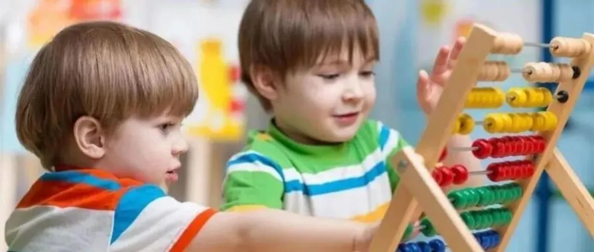

孖仔帮
公众号ID：twinsbang
关注
文|圆圈妈妈
网图|侵删
开学季过去的两周，咱们教育群和鸡娃群的气氛有点诡异，可以说是一半海水，一半火焰。
两只小神兽入园了，世界安静了，终于有自己的时间去面朝大海，迎接春暖花开。
然而，一系列的入园问题也接踵而来，最让人火急攻心但又无可奈何的莫过于孩子们初入园时的分离焦虑。
来看一位妈妈送孩子入园的经历：
好不容易把孩子从床上叫醒，一阵鸡飞狗跳才给孩子梳洗完毕，接着连哄带骗走出家门，去幼儿园的路上还得千叮万嘱一番，孩子嘴上答应得好好地会听老师的话，结果到了幼儿园门口，就不肯进教室，一会扯着我的胳膊，一会抱我的大腿，哭喊着说不要上学。眼看着上班快迟到，我的心里又气又急又难过，只好硬生生地把孩子塞给老师，然后带着不舍与愧疚的心情逃离现场。
类似的景象，是不是似曾相识？
这是初入园的小萌娃离不开父母时，所产生的分离焦虑以及对新环境适应困难的表现，是很常见的现象之一。
咱们双胞胎家庭的孩子可能比以上情形还要复杂，因为同样是“分离焦虑”，两孩子表现出来的程度和强度以及类型却千差万别，各不相同。
根据社群里妈妈们的分享，我总结了下，大概有以下7种。
1.严重哭闹型
这类型的孩子入园时会大声地哭喊：“我不上幼儿园，我要回家。”一边哭喊一边用小手使劲抱着家长的脖子不松手。进到教室以后就往地上躺，对来帮助他的老师又踢又踹。
2.跟随哭闹型
这类型的孩子入园时虽然会不高兴，但是并不哭闹。一来到教室门口，听到其他小朋友在哭，他马上就跟着哭起来了，或者等家长走后，就一直粘着老师，对老师说：“老师抱抱我。”
3.不断唠叨型
这类型的孩子入园时不哭也不闹，安静地坐在小椅子上，但是也不选择玩具，不和小朋友一起玩。每隔一两分钟就自言自语地唠叨：“妈妈什么时候来接我?”还不时担心地问：“老师，你喜欢我吗?”有时还拉着旁边的小朋友说：“别哭了，一会儿妈妈就来了。”一天下来，他总是无数次地重复这几句话。
4．后发作型
这类型的孩子一开始能高高兴兴地上幼儿园，对新环境表现出了极大的兴趣和好奇，可随着新鲜感的消失，他就开始想家，开始找各种理由哭闹。一会儿说“忘了带手绢”，一会儿又说“妈妈今天没和我说再见”，总之在别的小朋友哭闹减少时，他们反倒开始焦虑了。
5.身体不适型
这类型的孩子入园后常常表现出生理上的种种不适，不是头痛就是肚子痛，而且还每天尿裤子。但是一回家他的症状马上就消失。
6.矛盾型
这类型的孩子早晨入园时会哭闹，不愿进教室，可是当晚上离园时，他却怎么叫都不愿走，还说喜欢幼儿园。个别孩子来幼儿园时很高兴，可是等家长走了之后却一个人躲在角落里偷偷地哭，还有些孩子在幼儿园一般都玩得比较愉快，但是回到家里却表现得很暴躁，爱发脾气，稍不顺心就哭闹。
7.“绝食”型
这类型的孩子很有个性，外表很柔弱，也不喜欢说话，每天来园等家长走后，就坐在一旁掉眼泪，谁也不理，到了吃饭的时候，也不吃。就这样，他会几乎“绝食”了将近一个月的时间。

这7种类型中，圆圈兄弟占了2种，后发作型和矛盾型。
有时，这两种类型会交叉进行着，哥俩像说好似的轮流交换角色，无缝对接，秒切换，让人云里雾里，完全无计可施。
刚入园的第一周没有哭闹，每天都自觉起床洗漱，嚷嚷着要去幼儿园，但是第二周开始就完全变样了，拖拖拉拉地起床，哭哭啼啼地刷牙，慢吞吞地穿鞋，反正就是找各种理由不上学。
早晨入园时不情愿，可是当下午去接他们时，却怎么叫都不肯走，粘着老师一个劲儿地撒娇，还说喜欢幼儿园，不要回家了。
有时周末在家里很无聊或受委屈时，会突然伤心不已地大喊：“我不要妈妈了，我要去幼儿园，我想念老师了。”
自从入园后，两人在家里打架次数更频繁了，以前是三天一大吵两次干架，现在是每天都会莫名其妙地打起来。
感觉他们的情绪很不稳定，脾气更暴躁了，一言不合就开撕；但是在幼儿园，老师却说经常看两人即便是分在不同的游戏区，也能不知不觉玩在一起，很愉快，很和谐。
太诡异了！
圆圈兄弟入园前，我就做足了准备，也研究了很多妈妈写的入园攻略，最经典的就是那句话：送孩子入园时一定要狠心，眼神温柔而坚定。
后面我自己经历过后，也写过心得分享给大家，但我发现，缓解孩子初入园时的分离焦虑并不是靠家长的【温柔而坚定】便可高枕无忧，而是一种叫做安全感的东西。
有研究指出，父母（或熟悉的照顾者）如果在婴儿期提供一个安全的情感连结（也就是爱的连结），孩子在进入幼儿园时，会有更好的适应能力，这样的孩子较愿意探索新事物、容易与人相处。
一边是两个嗷嗷大哭的孩子，亲生的；另一边是上级领导给你的夺命连环CALL...
我想，没有哪个家长能真正做到温柔而坚定，心一横就拍屁股潇洒离去。
那些适应快，一周内就会消除焦虑，喜欢上幼儿园的孩子，必定是从婴儿期就与父母（或者是照料者）建立了良好稳定安全的依恋关系。
他们才五、六个月大时就已经开始体验这种分离焦虑，并在一次次的抗议，失望，惊喜...慢慢地适应下来。
被安全感，幸福感包围着长大的孩子，对父母有较高的信任度，不管去到哪里，都能快速适应新环境。
所以，我想说，去他的温柔而坚定！
如果不希望日后初入园时被两孩子一边扯胳膊，一边抱大腿，三人抱头痛哭，那么从现在开始吧！
悟已往之不谏，知来者之可追!
给足孩子们满满的安全感才是硬道理。
-END-
微信公众号：孖仔帮
ID : twinsbang
专注双胞胎孕育，养育，教育经验分享
扫码关注我们
点一下你会更好看耶
